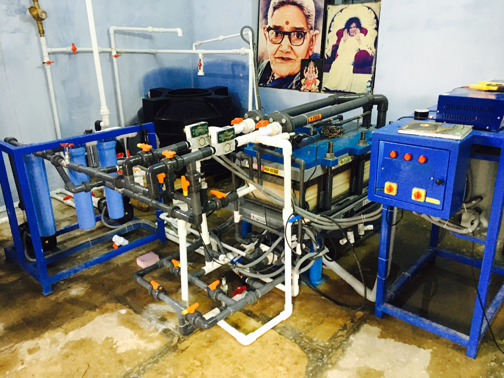
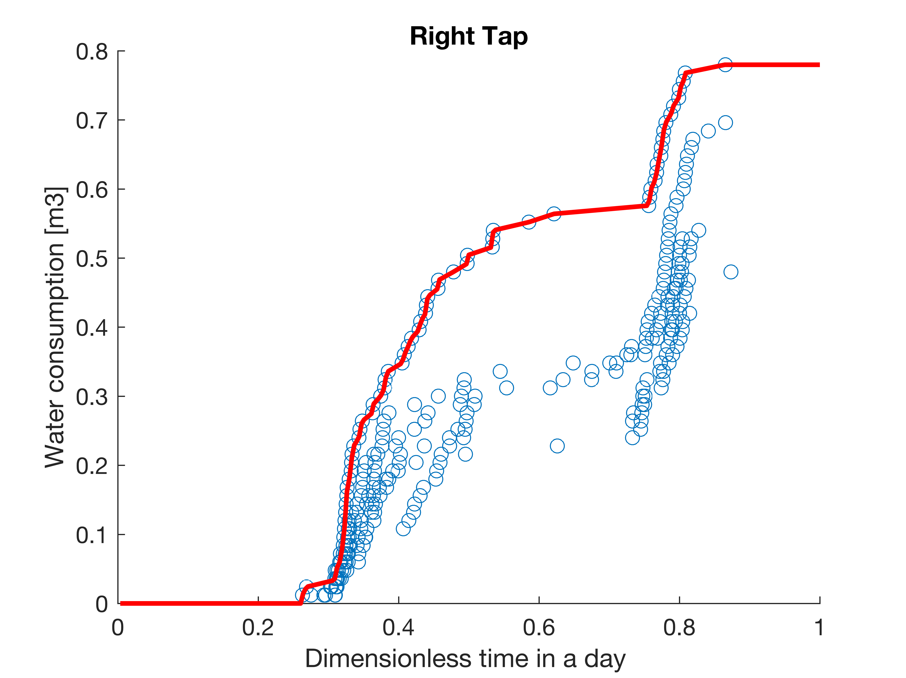
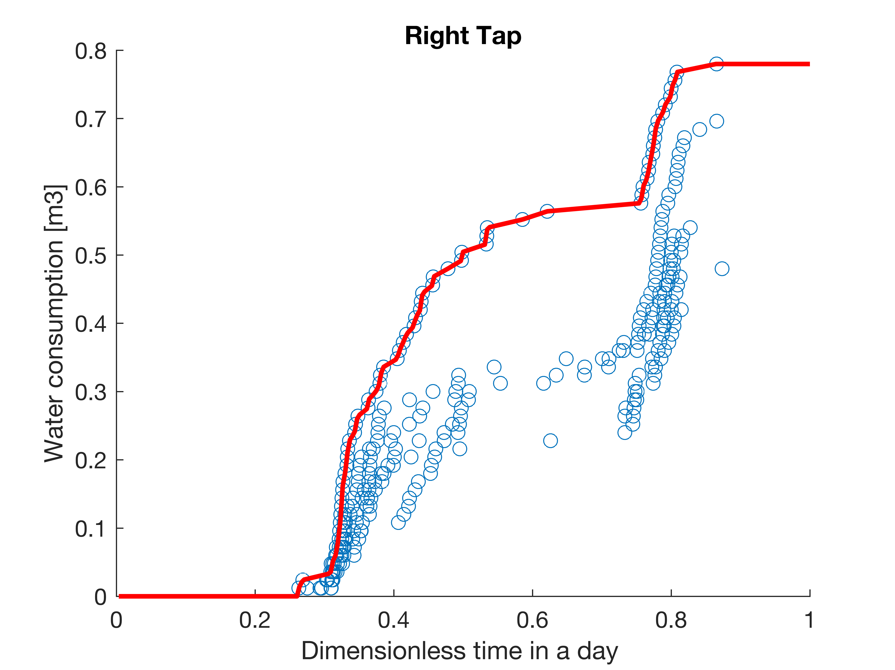

Solar PV Powered System
Lab Lunch Presentation on 3 Oct 2017
Wei He
Background
Can we reduce the cost by co-optimizing the power system and the load system?
YES !!
How to co-optimize the solar PV power system with the load?
A modeling and optimization framework!!
What we want the optimization framework do?
- Optimal selection of components i.e. PV panel, battery, pump, etc
- Optimal system design
- Flexible in designig different systems
Libraries in the framework
A typical optimization case

Cost reduction of off-grid solar power system by flexibly operating the electrical load
A flexible load can reduce the battery cost

Cost reduction due to the flexible operation

Optimization of the PV-EDR system in Chelluru
Data analysis of the results collected on Aug
- Inverter DC-AC efficiency
- DC power AC-DC efficiency
- Water consumption profile
Inverter DC-AC efficeincy

\[\begin{aligned}
P_{to EDR} = (P_{solar}-P_{batt-char} / \eta_{batt} + P_{batt-dischar}) \times \eta_{DC/AC}\
\end{aligned} \]
DC supply AC-DC efficeincy

\[\begin{aligned}
P_{EDR}^{simulation} = \frac{(P_{EDR-batch}+P_{pump} )^{simulation}}{\eta_{AC/DC}}\
\end{aligned} \]
Collected water consumption profile
 

Summarised a typical water consumption profile
EDR operation: batch vs hybrid/batch
Re-optimization of the PV-EDR system in Chelluru
- Averaged operating hour is about 8 hours per day
- Water recovery will decrease to the maximum water recovery for avoiding salt precipitation
- Using the water demand profile collected in Chelluru
- Efficiencies back-calculated from the data
- Produce 100 or 300 ppm product water
- Batch and hybrid operation will be investigated